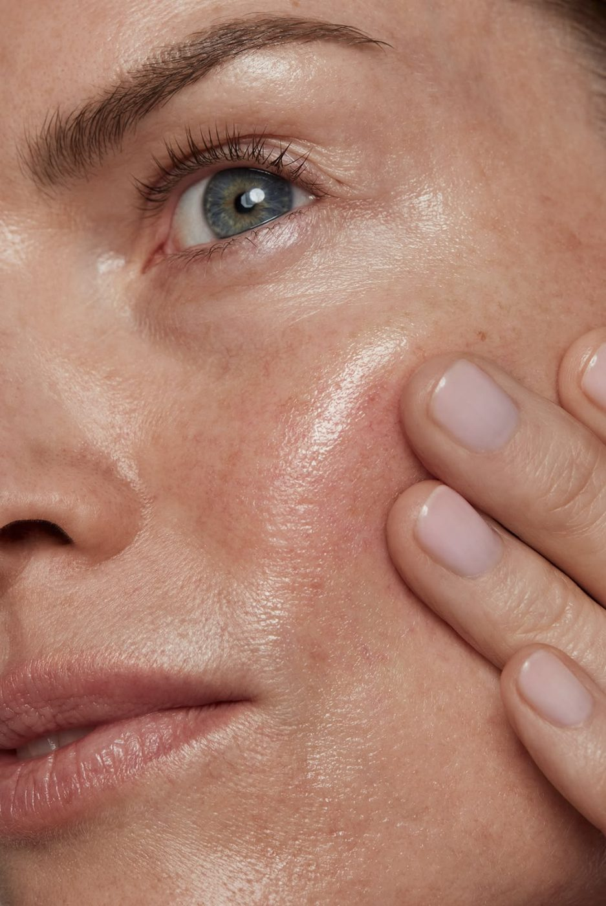

Le bilan de peau
Votre peau, lue en 9 mesures.
Avant tout soin, un appareil relève 9 mesures de votre visage. Nous les lisons avec vous, puis nous composons votre premier soin et votre routine. Ce premier rendez-vous dure de 2 h à 2 h 30.

Votre premier rendez-vous
Un moment tout en douceur, pas à pas.
Un moment pour vous, sans douleur et sans marque. Il suffit de venir avec une peau propre.
- 01
L'accueil
Nous parlons de votre peau, de vos habitudes et de ce que vous attendez. Un échange calme, autour d'une boisson.
- 02
L'analyse
L'appareil photographie votre visage et relève 9 mesures, zone par zone. Vous voyez les images à l'écran.
- 03
La lecture ensemble
Nous commentons chaque mesure avec vous. C'est votre identité cutanée, le point de départ de votre plan de soins.
- 04
Votre premier soin
Un soin composé d'après votre bilan, avec les technologies qui conviennent à votre peau.
- 05
Votre routine
Nous vous expliquons les gestes du matin et du soir, et vous repartez avec vos conseils écrits.
- 06
Le suivi
Quelques semaines plus tard, nous remesurons votre peau et ajustons le plan selon ses progrès.
Les 9 mesures
Ce que chaque mesure nous apprend sur votre peau.
Prises ensemble, les 9 mesures dessinent le portrait précis de votre peau et guident le choix de vos soins et de votre routine.
- 01
Hydratation
La teneur en eau de la peau. Elle conditionne le confort, l'éclat et la tenue du maquillage.
- 02
Nutrition
La richesse en lipides du film protecteur. Une peau peut être hydratée et pourtant manquer de nutrition.
- 03
Sébum
La production de sébum sur la zone T et sur les joues. Elle distingue une peau grasse d'une peau déshydratée qui brille.
- 04
Sensibilité
La réactivité de la peau. Elle guide la douceur des soins et le choix des produits.
- 05
Fermeté
La tonicité de la peau et la tenue de l'ovale, comparées à ce qu'une peau de votre âge affiche en moyenne.
- 06
Rides
Le nombre et la profondeur des lignes, du front au contour des lèvres. Ridules passagères ou rides installées.
- 07
Taches pigmentaires
Les taches visibles, et celles qui se préparent sous la peau. On traite les unes et on protège des autres.
- 08
Pores
La taille et la densité des pores, surtout sur le nez et le front.
- 09
Texture
La régularité du grain de peau, au toucher comme à l'image. Elle progresse au fil des séances.
En images
Le bilan de peau, tel que vous le vivrez.
L'appareil Care photographie la peau sous plusieurs lumières et calcule les 9 mesures en quelques minutes. Vous découvrez votre peau comme vous ne l'avez jamais vue.
Vidéo de l'analyseVidéo Care, puis celle du shooting
Vos questions
Avant de réserver.
Tout ce que l'on nous demande sur le bilan de peau.
Non. L'analyse se fait par contact léger et les soins sont non invasifs. Vous repartez sans rougeur durable et reprenez votre journée normalement.
Oui. La sensibilité est l'une des 9 mesures, et elle guide la douceur de chaque soin. Vous pouvez aussi tester des échantillons de produits avant de les adopter.
Certaines technologies ne sont pas utilisées pendant la grossesse, en cas de pacemaker ou d'implant métallique au visage. Nous en parlons lors du bilan, et le soin s'adapte.
De 2 h à 2 h 30, le temps du bilan, de sa lecture, d'un premier soin et de votre routine. Prévoyez de venir démaquillée, ou nous le faisons sur place.
Les tarifs sont indiqués sur la page Tarifs, et confirmés avant chaque soin. Rien n'est ajouté sans votre accord.
Non. Nous vous conseillons une routine d'après votre bilan, souvent trois produits pour commencer, et vous choisissez librement. Ils sont en vente à l'institut uniquement.
Commencez par votre bilan de peau.
Un premier rendez-vous de 2 h à 2 h 30, sans engagement. Nous vous rappelons sous 24 h.